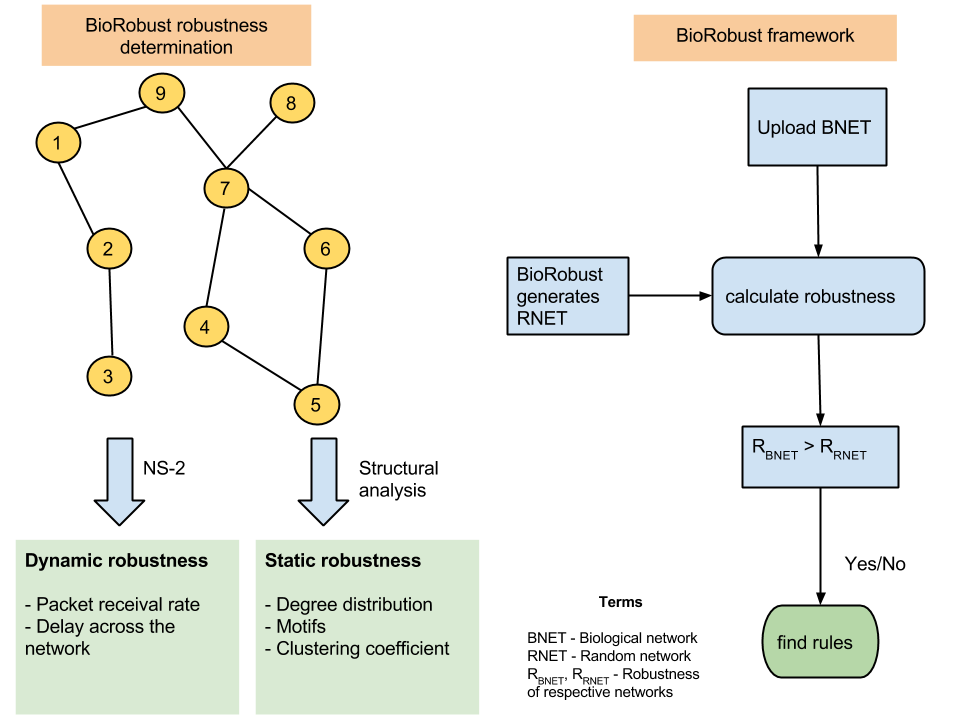
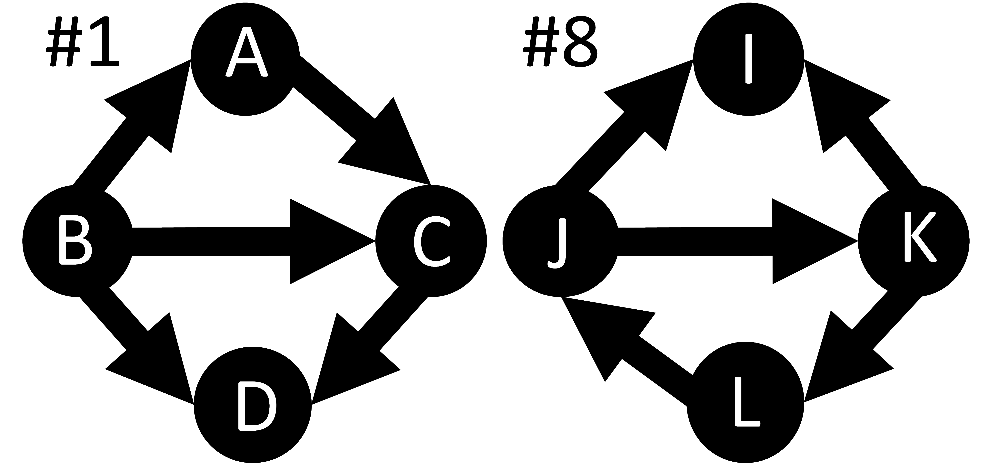
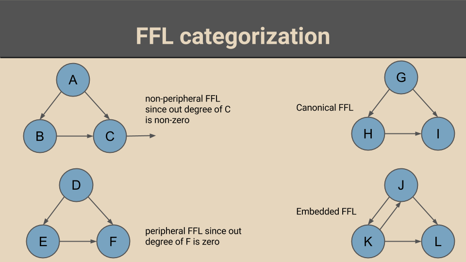

I quit academia in mid-2016 and joined Gramener. I no longer pursue academic research interests.
BioRobust is an online framework to determine robustness of biological systems. Robustness is measured in terms of a metric (packet receival rate) determined using NS-2, a network simulation platform. Features derived from the network are used to execute machine learning models to determine the best features impacting the robustness.
Feed-forward loop (FFL) motifs are often cited to be important factor for robust biological networks. In this study, we consider the role of connected FFLs in creating robust networks. To this effect, we study all 23 possible vertex-shared FFLs.
An example of a vertex-shared motif is presented below where the structural pattern ABC is one FFL and BCD is another FFL. #1 and #8 represent identifiers for two different vertex-shared motifs on left and right respectively. The patterns #1 and #8 are isomorphic in nature.
This work explores the role of feed forward loop (FFL) motifs in signal transduction within transcriptional regulatory networks. To observe this, FFLs are categorized using two criteria: spacial and structural. While peripheral and non-peripheral FFLs form the spacial categorization, canonical and embedded FFLs form the structural categorization.
